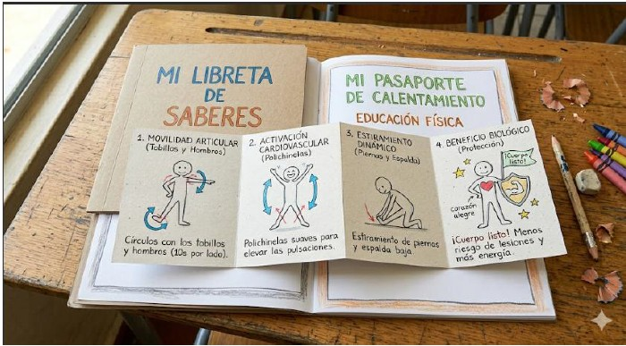
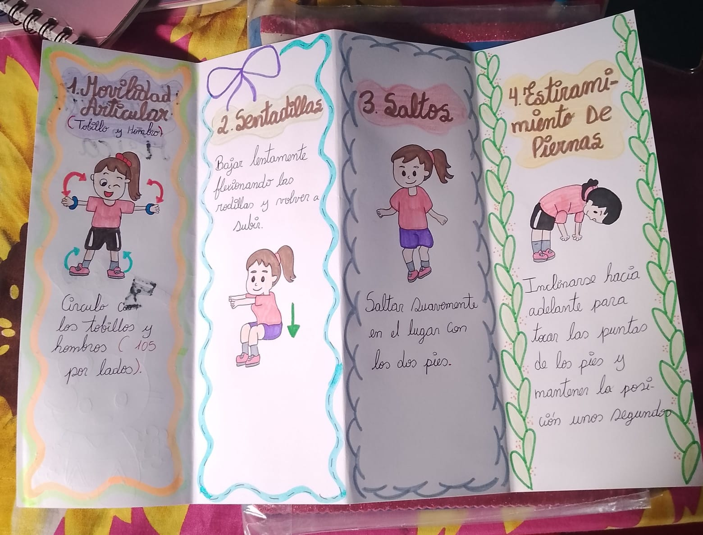
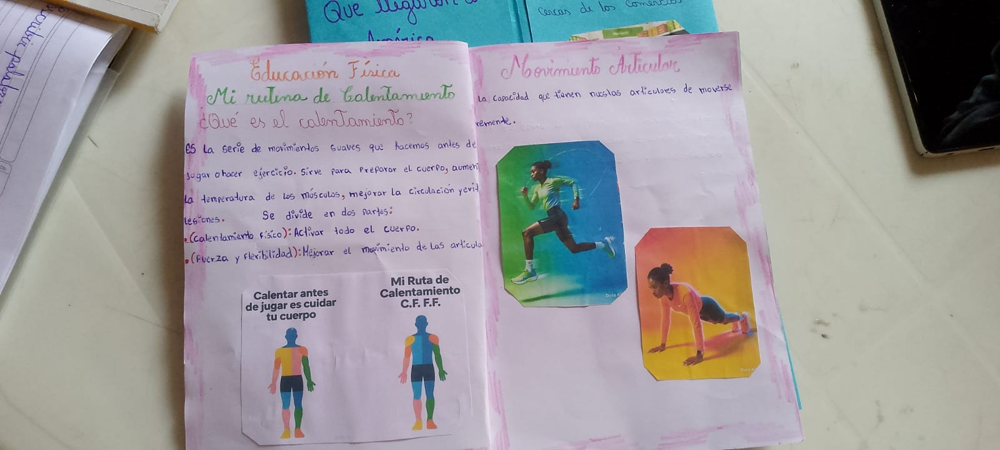
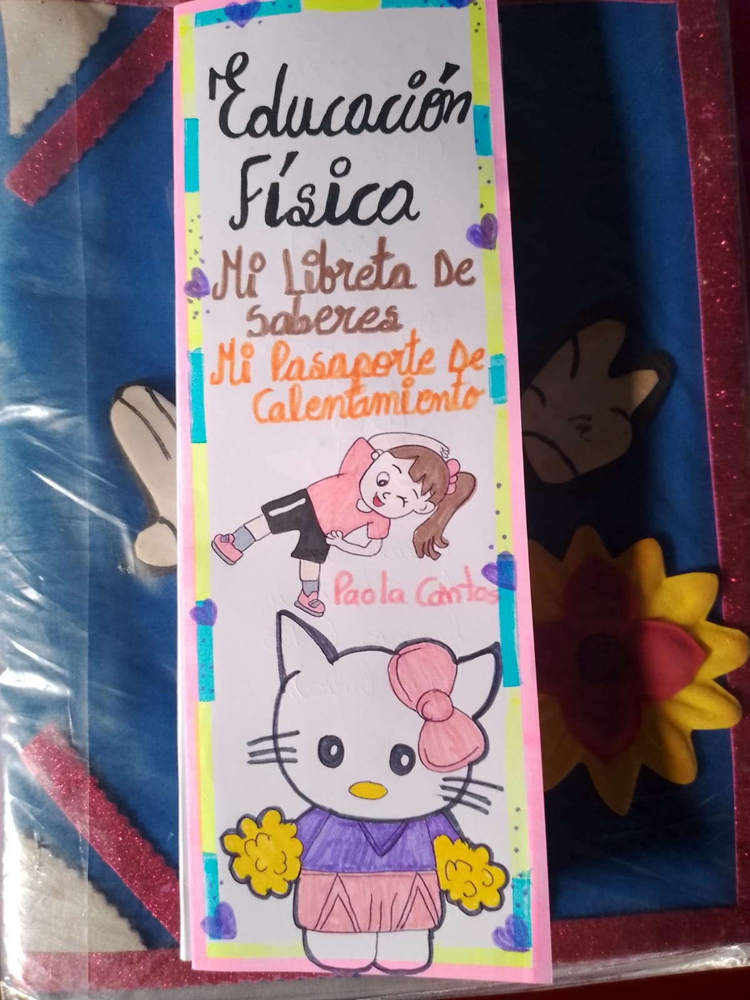

Fases del Proyecto
1. Práctica vivencial
Ejecutar una serie de ejercicios de movilidad y estiramiento físico en el patio de la institución educativa.
2. Identificación de beneficios
Reconocer la importancia del calentamiento antes de realizar una actividad motriz para disminuir el riesgo de lesiones.
3. Secuenciación en papel
Seleccionar 4 ejercicios básicos realizados en la práctica y ordenarlos en pasos sucesivos[cite: 1].
4. Registro físico
Dibujar o describir de forma clara la rutina de calentamiento en una de las secciones de la libreta del proyecto[cite: 1].
Evidencias de Trabajo



